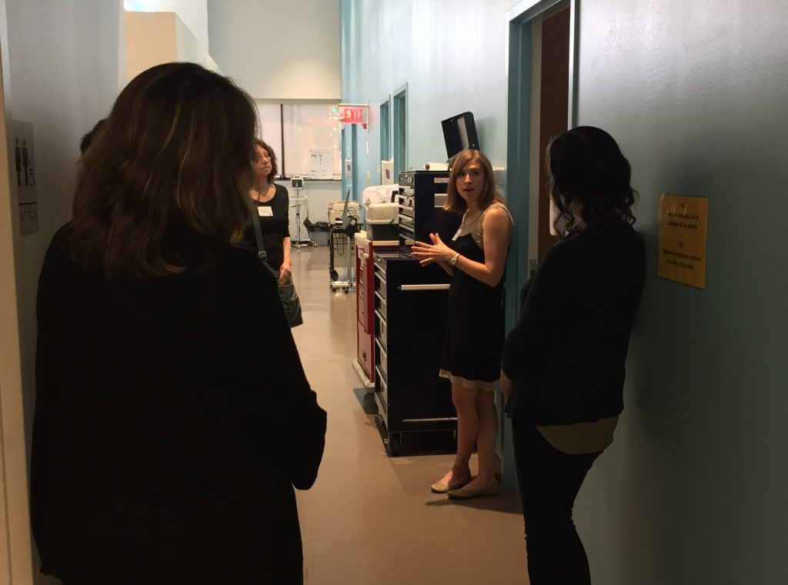
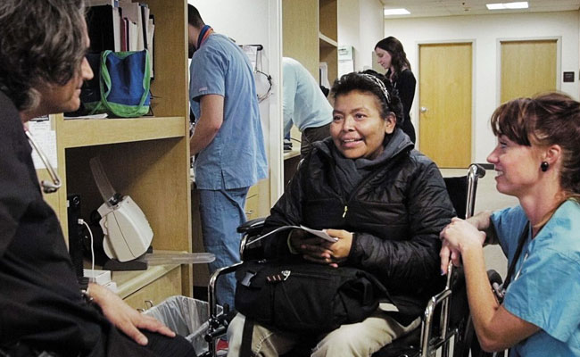
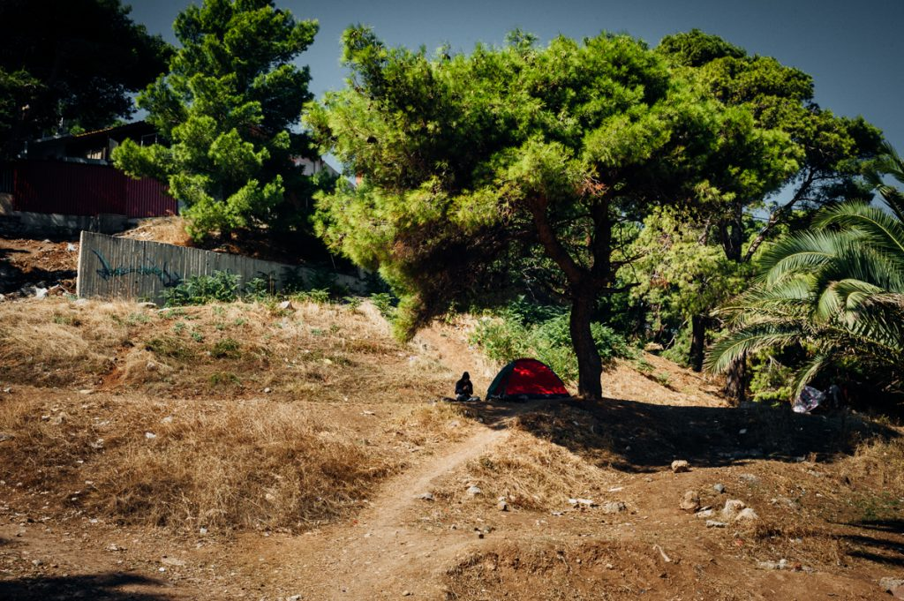
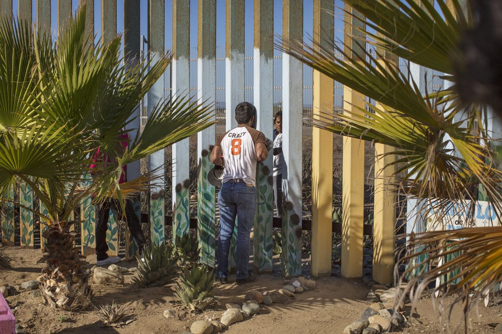
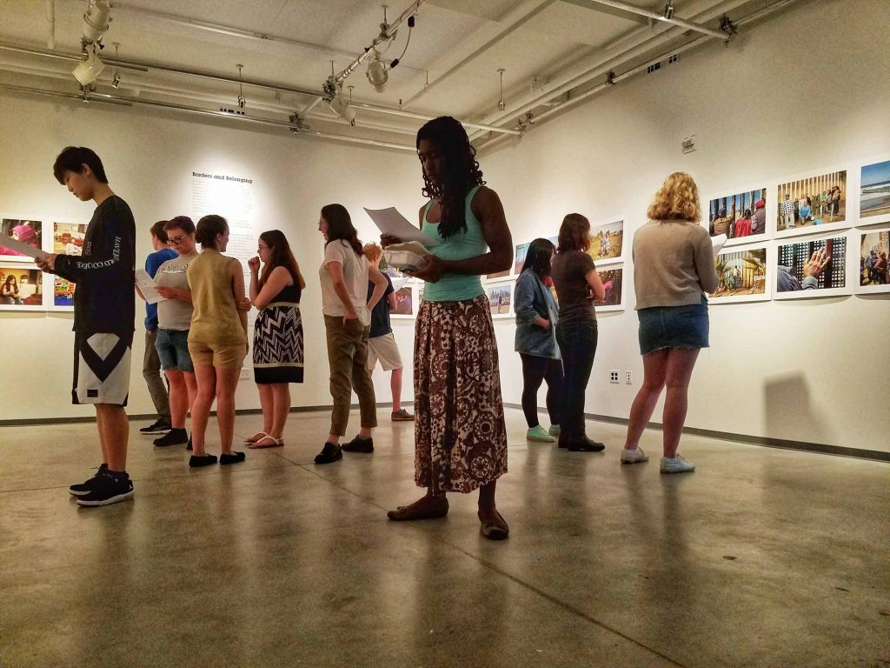
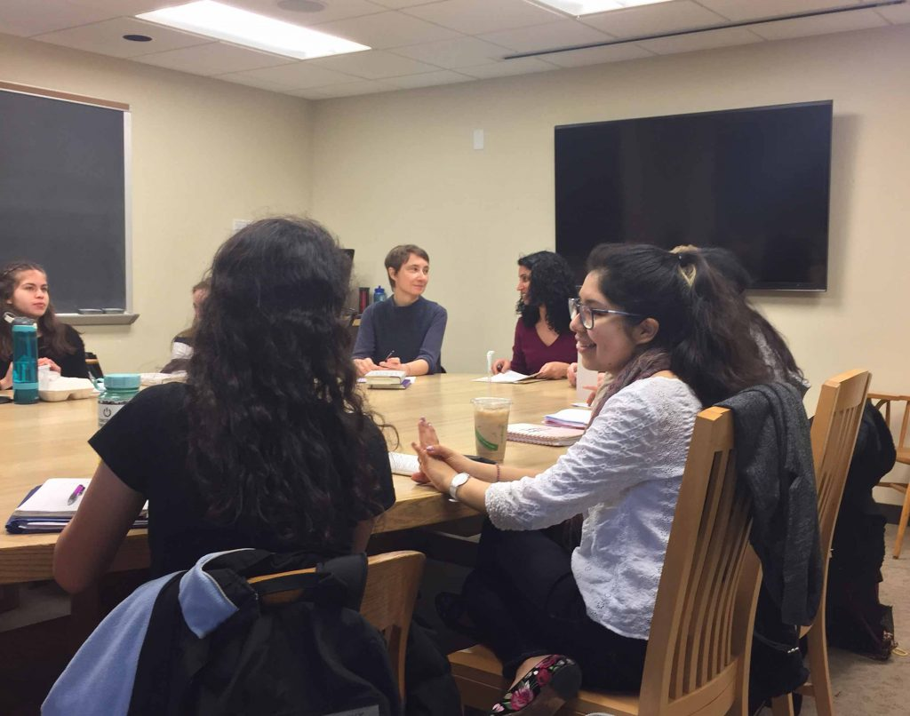
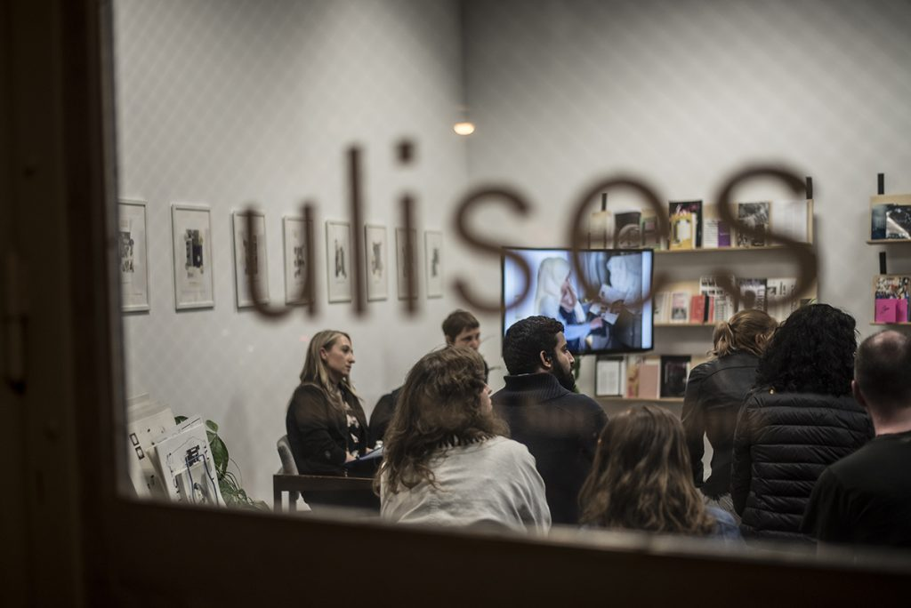
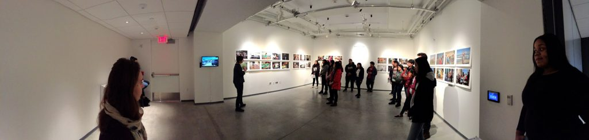

PACC
Introduction
How can we bring about a better understanding of issues related to citizenship, belonging, and identity politics? Who Belongs? Exodus and Arrival will illuminate the current political discourses on human rights, social justice and global political issues around immigrants and refugees in Europe and the United States. Through this conversation and collaboration within the local Philadelphia region about this national issue, we will explore how experiences along the migrant trails can alter the perception of migration as a contested topic in EU and US context.
Collaborators
Events
Puentes De Salud, Non-Profit Partner
Site Visit
10.6
1700 South St, Philadelphia, PA

In collaboration with the Haverford Center for Peace and Global Citizenship, PACC collaborators and faculty visited Puentes de Salud in South Philadelphia, and received a tour lead by Alexandra Wolkoff, the Assistant Director for Puentes De Salud.
Wolkoff guided them through the physical spaces at Puentes: patient rooms, the on-site medical center, and then through their program offerings: like the after school art programs, and legal counseling. On the tour, they opened a dialogue around engaged learning, Puentes De Salud’s work in the community, and their thinking in respect to college-community partnership.
Read lessPuentes De Salud: Alexandra Wolkoff, Assistant Director
Non-Profit Partner
2.17~
1700 South St, Philadelphia, PA

Puentes de Salud is founded on the principles of Social Determinants of Health and Social Justice. We believe that community health, wellness, and empowerment result from a collaborative, multidisciplinary effort to address the conditions in which we grow, learn, live, work, and age. These conditions influence an individual’s quality of life and the development of the community as a whole. Puentes de Salud aims to improve community and individual health and wellness not only by providing immediate services, but also by acknowledging and challenging embedded social inequalities and injustices.
Puentes de Salud works in partnership with community members, local public schools, universities, governmental institutions, and other nonprofit organizations to address the adverse structural, economic, and social conditions that profoundly affect the prosperity of this community. At Puentes de Salud we are challenging the idea that deep and long-standing inequalities are acceptable realities within our society. We are not only re-imagining but also fostering an environment in which our vision of equitable access to health care, education, and empowerment exists.
Read lessJacobia Dahm, Lead Artist
Artist in Residence
2.17 - 2.25

Jacobia Dahm lives between Berlin and New York City. She will be an artist in residence at Haverford College during the Spring 2018 Semester and will be on campus from February 17th – February 25. The photograph above is from her series Journey Through the Balkans, the following information accompanies the image “Those who can afford it and who know about the hardship of the journey north buy a tent upon arrival in Greece, which will save them from many homeless nights until they get to their desired destination. Oct 4, 2015.”
Read lessBorders and Belonging w/ Jacobia Dahm, Lead Artist & Griselda San Martin, Artist
Artist Talk & Opening Reception
2.19
4:30-6:30pm, VCAM, Haverford College

Borders and Belonging: Artist Talk and Opening Reception
Monday, February 19, 2018
4:30PM-5:30PM Artist talk, VCAM Screening Room 001
5:30PM-6:30PM Reception, VCAM Create Space 006
In Borders and Belonging, photographers Jacobia Dahm and Griselda San Martin work to illuminate individual stories of migration, arrival, and separation. The images direct our attention towards the capacity and necessity for humans to create homes for themselves, no matter how transitory the situation. At a time when population movements are repeatedly cast as economic and security threats, these four projects highlight the urgency of documenting the people who make up these populations.
Borders and Belonging runs from Monday, February 19th – Sunday, March 4th and is is open to the public Monday – Friday 9:30am – 5pm.
Cover Image: Griselda San Martin from The Wall which focuses on a stretch of the U.S.-Mexico border fence called “Friendship Park” where families convene to see their loved ones through the massive metal wall that separates them.
Read lessVisualizing the United States of Europe Course Visit w/ Jacobia Dahm, Lead Artist & Griselda San Martin, Artist
Course Visit
2.21
11:15am-12:45pm, VCAM, Haverford College

Lead artist and photojournalist Jacobia Dahm and documentary photographer Griselda San Martin lead the students in Imke Brust’s course “Visualizing the United States of Europe” on a tour through VCAM’s latest exhibition, Borders and Belonging. There, Dahm and San Martin presented their body of photography firsthand, engaged the students in discussions about the concepts present in the exhibit, and how these ideas connect with the larger collaborative PACC project.
Read lessCitizenship, Migration, and Belonging Course Visit w/ Jacobia Dahm, Lead Artist
Course Visit
2.22
1:30-4pm, VCAM, Haverford College

Lead artist and photojournalist Jacobia Dahm visited professor Zainab Saleh’s course “Citizenship, Migration, and Belonging”. In the visit, Dahm talked with the students about her personal experience with people who were crossing the border, the subject of her work, and connected it to the readings the students were doing inside of Zainab’s class.
Read lessWho Belongs? A Conversation w/ Jacobia Dahm, Artist & Roksana Filipowska, PhD Candidate
Conversation
2.21
6:30-8pm, Ulises, 31 E Columbia Ave, Philadelphia, PA

Discussion around refugees and immigration often dehumanize their subjects through abstractions, statistics, or hyperbole. How can photography serve as a tool to begin conversations about “the refugee” as a human, whose livelihood is both particular and precarious, and remains in the hands of policy makers? Join us for a presentation of work by photojournalist Jacobia Dahm followed by a conversation with Roksana Filipowska, PhD Candidate, about the ethical considerations of Jacobia’s work photographing refugees.
Drinks and light snacks will be served – Free and open to the public.
Jacobia Dahm is a German photojournalist based in Berlin whose projects are rooted in her longstanding interest in social justice and vulnerable communities. In the past she have worked on stories revolving around the effects of criminal justice on families (in the US), and since 2015 has been documenting refugees along the migrant trail, and after their arrival in Germany.
Roksana Filipowska is a PhD candidate in the History of Art at the University of Pennsylvania. Her publications include “In Defiance of Propaganda: Photographic Failure as Shared Ground” in Too Good to be Photographed (Lugemik, 2017) and she has co-organized Service Sound, a database of international protest sounds, which pairs able protesters with recordings of those who can not attend marches and demonstrations.
Cover Image: Jacobia Dahm from ‘In Limbo’
Read lessBorders and Belonging w/ Puentes de Salud High School Art Program & Jacobia Dahm, Lead Artist
Artist-Led Exhibition Tour
2.24
11-12:30pm, VCAM, Haverford College

Artist Jacobia Dahm gave an artist talk and exhibition tour to high school students enrolled in the Puentes de Salud afterschool art program. The students took a bus from center city to Haverford College specifically to see the exhibition and meet Jacobia, who was visiting from Berlin. Many of these students are undocumented and along with their parents are reliant on the medical, legal, financial and educational services that Puentes de Salud provides. While Jacobia photographs refugees in Europe, these students and their families are experiencing similar transitional issues.
Read lessArchive
Reference
— Northern Research Station
— Puentes De Salud
— Jacobia Dahm
— Griselda San Martin